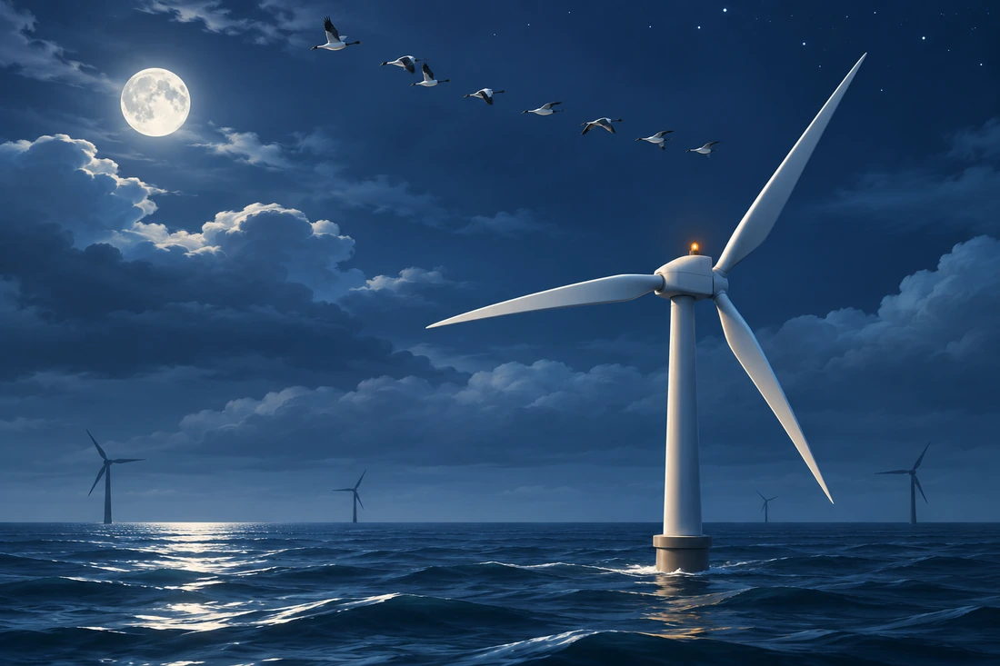

AI-genererad redaktionell illustration
Om bilden
Flocken och vindkraftverken delar samma hav i bilden. Det är en fri tolkning av nattligt fågelsträck vid havsbaserad vindkraft, inte en bild av en viss plats, ett visst flygstråk eller en uppmätt kollisionsrisk.
Lunchreportaget · Fåglar och naturvård
· 5 min läsning
När fåglarna får företräde över Nordsjön
Mellan klockan sex på kvällen och midnatt den 23 november skulle rotorbladen i ett antal nederländska vindparker på Nordsjön gå långsammare än två varv i minuten. Skälet stod i ministerbeslutet: många flyttfåglar väntades passera. Beslutet är daterat och skickat den 21 november; det offentliga beskedet är daterat den 23 november. Enligt beslutsunderlaget bedömde TenneT att elförsörjningen inte väntades få problem under de timmarna. Det var en bedömning på förhand, inte ett mått på hur mycket el parkerna sedan producerade. Det gällde bland annat vindkraftsområdena Borssele och Hollandse Kust. Beslutet berättar vad operatörerna skulle göra. Det säger inte hur många fåglar som passerade den kvällen eller om någon undvek en kollision.
Det är en viktig skillnad. Nederländerna har hittat ett sätt att agera innan de vet exakt hur många fåglar som är på väg. Men för att avgöra om åtgärden fungerar behöver landet besvara flera frågor. Kan man förutsäga när fåglarna kommer? Går det att kontrollera att turbinerna verkligen bromsar? Och hur vet man vad som hade hänt om de fortsatt snurra som vanligt?
Två dygn innan fåglarna väntas komma
Fågelflytten över havet är ojämnt fördelad. En vår eller höst kan rymma många lugna nätter och några timmar med ovanligt tät passage. Det är de timmarna det nederländska Start/Stop-programmet försöker hitta. Om tillräckligt många fåglar väntas passera på ungefär den höjd där rotorbladen sveper är tanken att bromsa just då, inte hålla turbinerna nära stillastående hela säsongen.
En forskargrupp vid Amsterdams universitet byggde prognoser för södra Nordsjön på fem års fågelradardata från havet utanför den nederländska västkusten. De använde bland annat väder och tiden på året för att beräkna hur tät den nattliga flytten skulle bli på låg höjd. En vind som bär i ena färdriktningen behöver inte bära i den andra. Därför görs olika modeller för vår och höst. Även då kan förhållanden som ser lovande ut ge en natt utan någon tydlig topp i det område där man mäter.
Prognosen görs ungefär två dygn i förväg. Den framförhållningen gör det möjligt att planera driften, men väder och flytt kan hinna utvecklas annorlunda än modellen räknat med. Fågelexperter bedömer hur rimlig prognosen är. Elnätsoperatören TenneT bedömer om minskad produktion från flera vindparker samtidigt kan äventyra elförsörjningen. Ministern beslutar sedan om ett bestämt tidsfönster. I våras kontrollerade kustbevakningen från sjö och luft att de berörda parkerna hade följt besluten vid de tillfällen som kontrollerades. Den kontrollen handlade om turbinerna, inte om fåglarnas överlevnad.
En topp för vem?
Vid Borssele i oktober 2023 följde operatörerna ministerns råd att bromsa under tre nätter. Regeringen uppgav därefter att en första radargranskning visade en flyttopp vid två av de tre tillfällena. Det låter som ett betyg på prognosen. Men för att veta hur bra modellen är behöver man också leta efter de nätter då ingen inbromsning begärdes, trots att många fåglar passerade.
Den tekniska utvärderingen av 2023 gör just en sådan jämförelse. I den senare rapporten syntes topparna vid två av de tre inbromsningsnätterna i den vertikala radarn i Luchterduinen, men inte i den horisontella. På tre andra höstnätter registrerade den horisontella radarn toppar över rapportens mätgräns. Vid ingen av dem låg prognosen över sin egen larmgräns. Det rör sig alltså dels om nätter då en varning bekräftades med ett av instrumenten, dels om andra nätter då ett annat instrument registrerade toppar som modellen inte varnade för. De båda radarsystemen mäter och bearbetar signalerna på olika sätt. Rapporten visar dessutom hur vågor kan störa mätningen. När signaler filtreras bort för att inte misstas för fåglar kan även verkliga fågelpassager försvinna ur radardata. En radar utan tydlig topp är därför inte samma sak som ett hav utan fåglar.
När regeringen ändrade villkoren i januari 2026 tog den bort den fasta gränsen på 500 fåglar per kilometer och timme på rotorhöjd ur de berörda tillstånden. Prognosmodellen signalerar fortfarande när den beräknade flyttintensiteten passerar ett tröskelvärde, men den siffran är inte låst i själva tillståndet. Motiveringen var att den tidigare gränsen hade visat sig vara för hög för att utfärda bindande beslut, trots att radar sett tydliga toppar. Tidigare hade operatörer ändå bromsat frivilligt på rekommendation. Det nya villkoret låter ministern ange när turbinerna ska ned under två varv i minuten, på grundval av prognosmodellen och med råd från elnätsoperatören. Vid behov kan ministern också ta in råd från fågelexperter.
För ett beslut på förhand spelar det roll vilken sorts fel man helst vill undvika. En varning utan efterföljande flyttopp kan kosta elproduktion i onödan. En utebliven varning kan betyda att turbinerna går i vanlig fart just när många fåglar passerar. I det senare fallet hjälper det inte att radarn kan visa passagen nästa morgon. Därför kan träffsäkerheten inte bedömas enbart utifrån de nätter då någon faktiskt utfärdade en varning.
Det svåraste att räkna
Radar beskriver trafik över havet. Den kan visa när många fåglar passerar en plats och ge uppgifter om flyghöjd eller riktning beroende på instrumentet. Den är inte därmed en räknare för kollisioner. Två täta flyttnätter kan innebära olika risk: fåglar kan ligga över eller under rotorernas svepyta, eller väja på olika avstånd. Rotorer som går långsamt är dessutom inte samma sak som en fri passage utan hinder.
För att veta hur många fåglar en inbromsning faktiskt räddar måste man kunna jämföra vad som händer under tillräckligt lika förhållanden med och utan åtgärden. Det kräver mer än att veta att radarn registrerade mycket trafik och att operatören följde beslutet. Fältmätningar nära rotorerna och återkommande jämförelser mellan nätter behövs för att komma vidare. Utan dem vore det missvisande att sätta likhetstecken mellan antalet fåglar som fick passera långsammare turbiner och antalet räddade fåglar.
Ordern för den 23 november går att läsa ner till klockslaget. Effekten den natten har jag inte kunnat belägga. Mellan de två uppgifterna ryms själva poängen med försöket på Nordsjön: elnätet och fågelskyddet behöver ett beslut innan natten börjar; utvärderingen måste vänta tills det finns något att jämföra med.